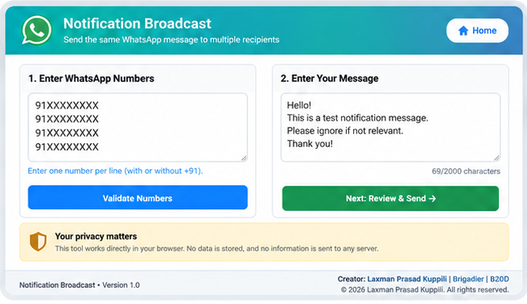
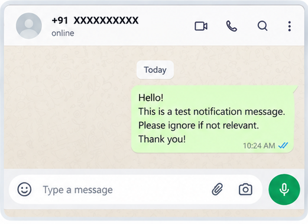

WhatsApp Notification Broadcast
Simplifying repetitive multi-recipient communication through lightweight browser automation.
The Challenge
Sending the same notification individually to multiple WhatsApp recipients can become repetitive. The typical process involves finding a recipient, copying the message, pasting it, sending it, and repeating the same steps for every person.
For a small number of recipients this is manageable, but as the recipient list grows, the process becomes time-consuming and increases the possibility of copy-paste or number-entry errors.
The core challenge was not WhatsApp itself — the platform works reliably for individual and group messaging. The friction stemmed entirely from the repetitive workflow required for one-to-many individual communications, where each recipient needs an individual message without creating an unwanted group.
The Solution
I built a lightweight browser-based application that prepares a common WhatsApp notification for multiple recipients through one structured workflow.
The application simplifies and structures the process so the user can:
- Enter multiple WhatsApp numbers in one go
- Write the common message once
- Validate and clean the recipient list automatically
- Remove duplicate recipients so numbers are not processed twice
- Review the recipient list and draft before proceeding
- Confirm the broadcast parameters
- Process recipients sequentially without opening multiple tabs at once
- Open each WhatsApp conversation with the message pre-filled
- Perform the final Send manually with full human discretion
The application structures preparation and eliminates manual retyping, while deliberately keeping the user in full control of every final dispatch decision.
The application deliberately does not send messages automatically in bulk or bypass WhatsApp's native interface; instead, it orchestrates the preparation steps so each message is ready for human review before sending.
How It Works
The application guides the user through an end-to-end sequential workflow designed for clarity and safety:
-
1
Add Recipients Enter one or multiple WhatsApp numbers using a comma-separated list into the recipient input area.
-
2
Compose Once Write one common notification message in the editor without needing to retype or copy-paste it later.
-
3
Validate The application parses, cleans and validates the recipient numbers against international phone formatting rules.
-
4
Remove Duplicates Duplicate recipients are identified and removed so the same number is not processed twice during the session.
-
5
Review & Confirm Review the valid recipient count, parsed numbers, and message content in a confirmation dialog before continuing.
-
6
Create the Queue The application prepares a structured sequential queue, maintaining progress and current position.
-
7
Open in WhatsApp The current recipient conversation is opened using WhatsApp Click-to-Chat with the validated number and message pre-filled.
-
8
Human Review & Send The user reviews the prepared message in WhatsApp and manually presses Send to complete the communication.
-
9
Continue Return to the application and proceed to the next recipient in the queue until all contacts have been processed.
Built Incrementally, Not All at Once
The solution was deliberately developed in small stages so that each capability could be tested and verified before introducing the next one:
Building incrementally made it easier to validate each behaviour, protect existing functionality and identify problems before they propagated into later stages.
Key Capabilities
The application bundles a focused set of client-side utilities designed to balance efficiency with operational safety:
Automation with Guardrails
Privacy and responsible usage were treated as core architectural design requirements rather than afterthoughts:
When the user chooses Open in WhatsApp, the selected recipient number and encoded message are passed to WhatsApp through the Click-to-Chat URL so the conversation can be prepared.
Lightweight by Design
The application relies entirely on standard browser capabilities, static hosting, and native WhatsApp integration:
The simplified architectural data flow operates as follows:
No custom backend or application database is required for Version 1.0. WhatsApp is not hosted inside the application; standard web protocols securely bridge browser-based preparation to the native communication client.
What Changed?
Structuring the preparation workflow created a clear shift in how multi-recipient notifications are handled:
Repetitive manual search and copy-paste activity for each recipient; high risk of missed numbers, clipboard mistakes, and operational fatigue.
Recipients are cleaned and verified upfront; duplicate numbers are eliminated; messages are pre-filled; sending remains intentional and human-reviewed.
Key practical outcomes achieved:
- Reduced repetitive copy-paste activity
- Reduced manual number-entry errors
- Structured the multi-recipient workflow
- Added validation before processing
- Added clear progress visibility
- Retained human control over final sending
- Avoided unnecessary backend/database infrastructure
"The biggest learning was that useful automation does not always require a complex platform, AI agent or backend service. Sometimes the right solution is to remove repetitive steps while deliberately preserving the human decision at the point where it matters."
AI-assisted development helped translate the requirement into small, testable increments — but validation, workflow decisions, privacy controls and responsible-use boundaries remained part of the solution design.
Visual Walkthrough
The visual walkthrough below illustrates the start-to-finish user journey: from composing and validating the batch notification in the browser to reviewing the pre-populated chat directly in WhatsApp before final manual transmission.
1. Prepare the Notification

Enter multiple recipients and compose the common message once.
The user enters recipient numbers into the input view and drafts the common notification. Real-time validation checks format rules and character boundaries directly in the browser with zero backend storage.
4. Review & Send

WhatsApp opens with the recipient and message prepared. The user retains control of the final Send action.
Selecting "Open in WhatsApp" triggers the official Click-to-Chat protocol, opening the recipient chat with the pre-populated notification payload. The user retains full control to inspect, confirm, or edit before executing the final manual send.